29.10.2026 · Beide Anwendungen bei 1440 × 1000 CSS-Pixeln und 100 % Zoom. Vergleichbare Testobjekte; Objektpositionen des lokalen Vergleichsboards anhand der sichtbaren Referenz nachgestellt. Die Originalbelege bleiben unter ../screenshots/ erhalten. Bilder anklicken für die volle Auflösung.
Eigene Marke und Icons; kein vollständiger Miro-Nachbau. Menüumfang und Schriftfamilie unterscheiden sich. Funktionen ohne lokale Umsetzung werden nicht als Platzhalter gezeigt. Details im Prüfprotokoll, Ergebnisse in test-results.json.
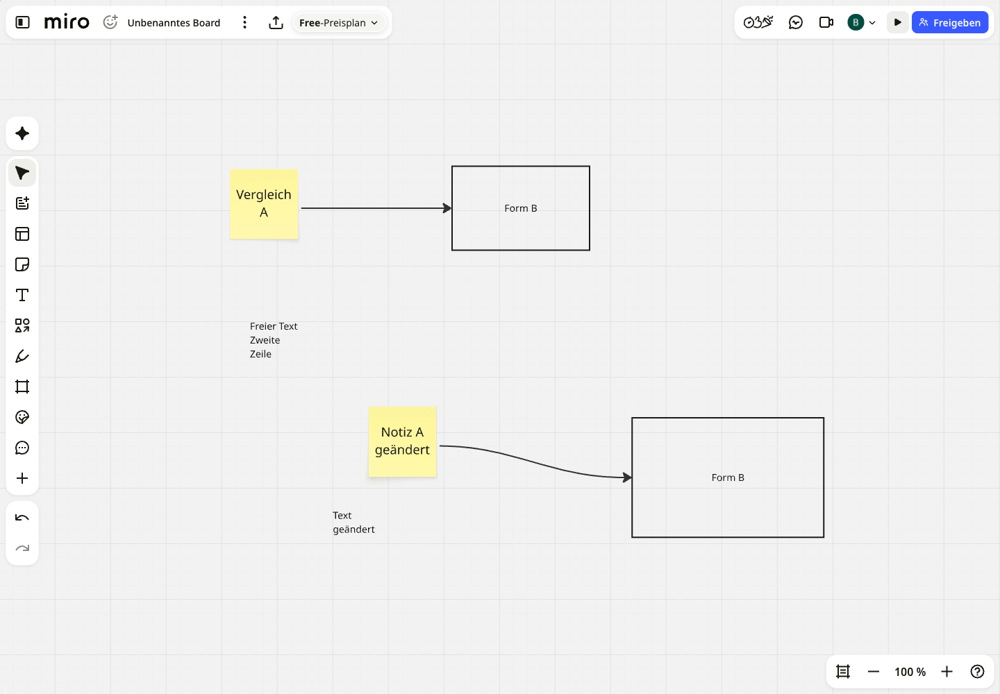
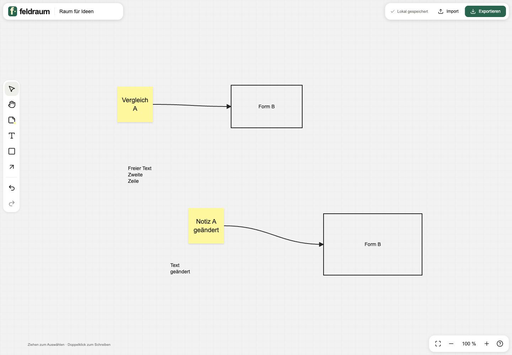
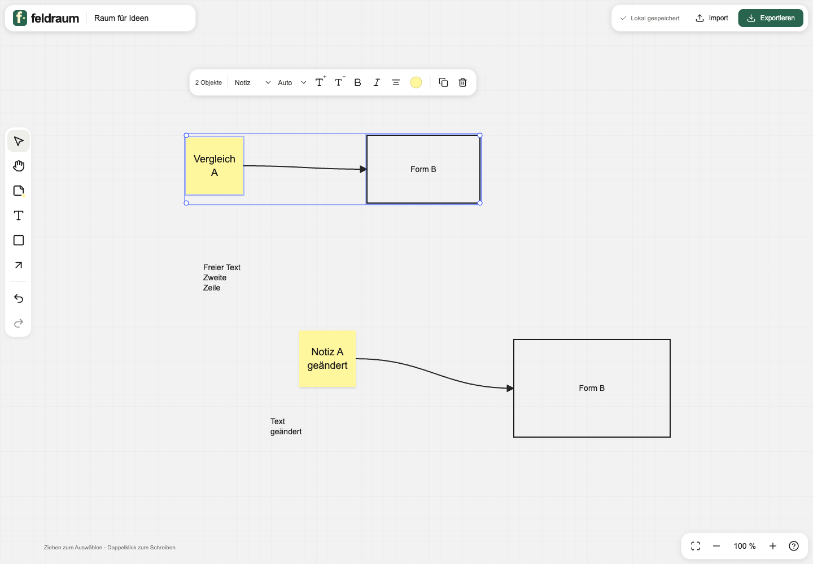
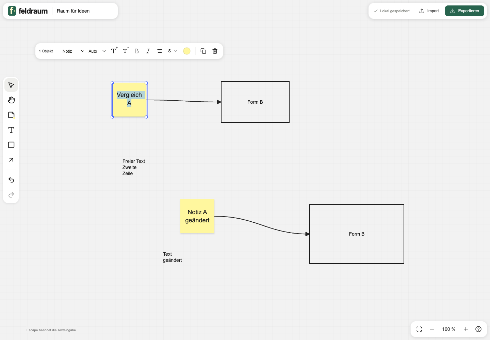
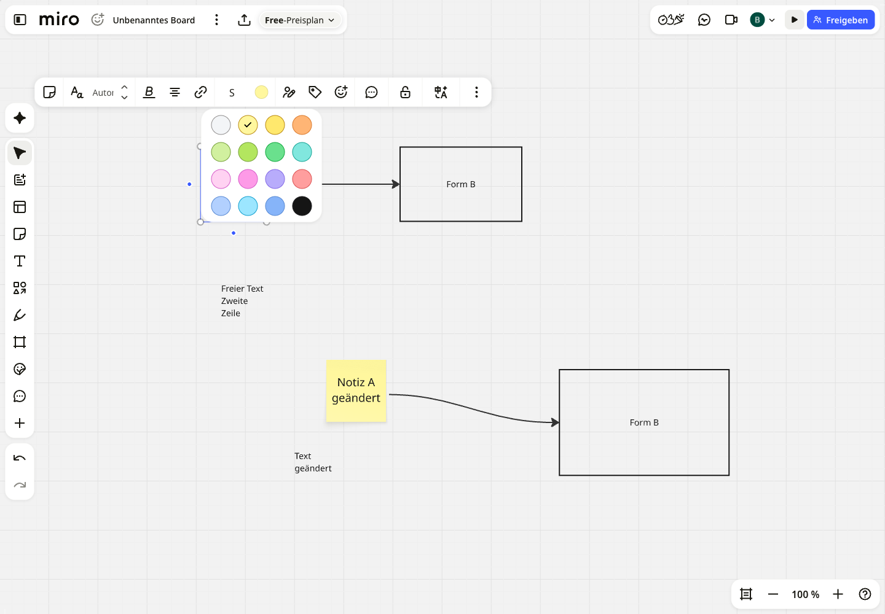
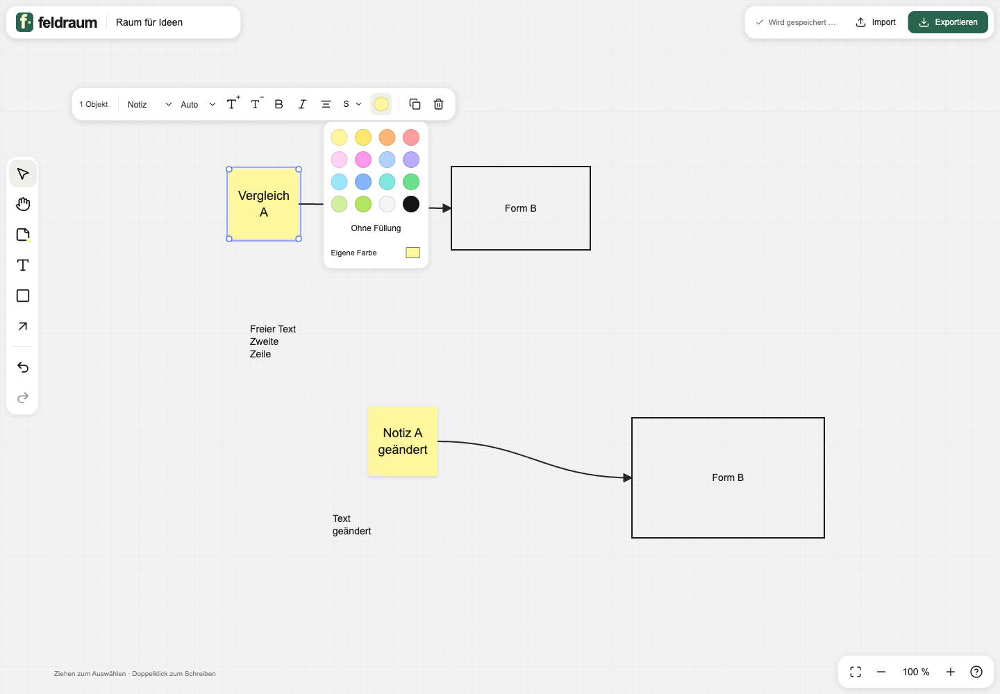
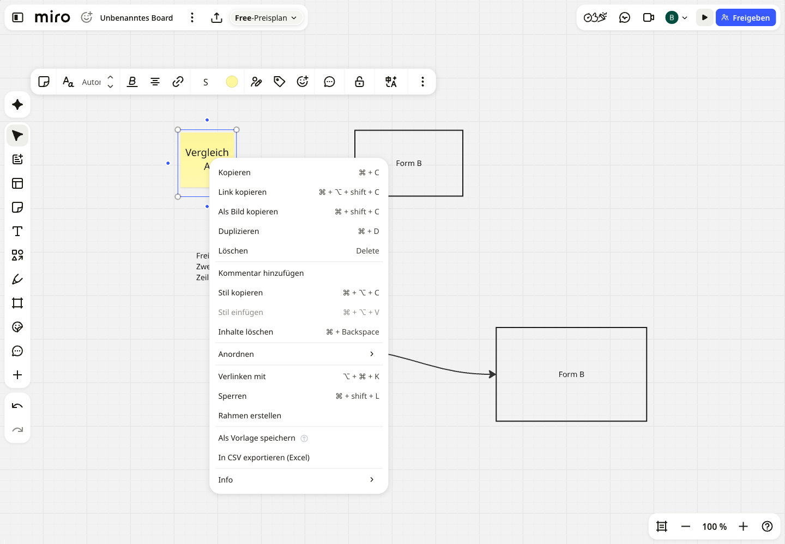
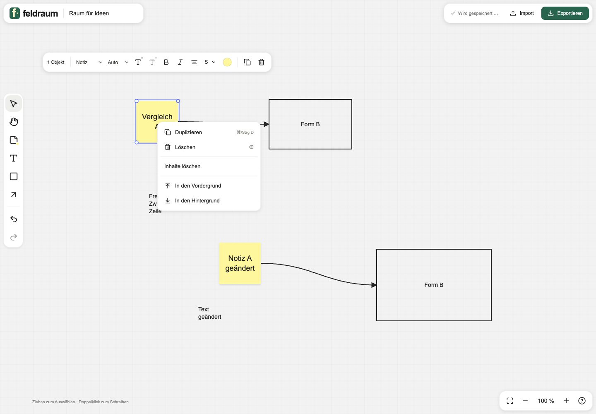
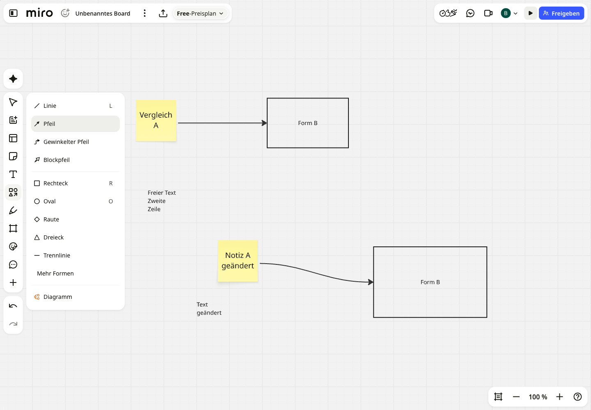
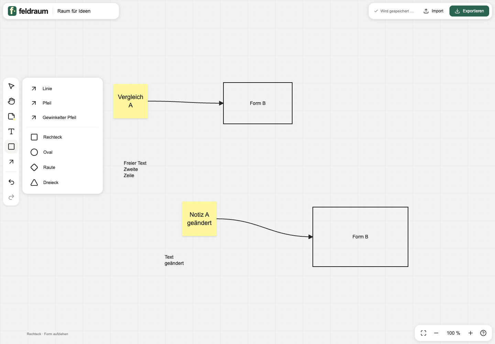
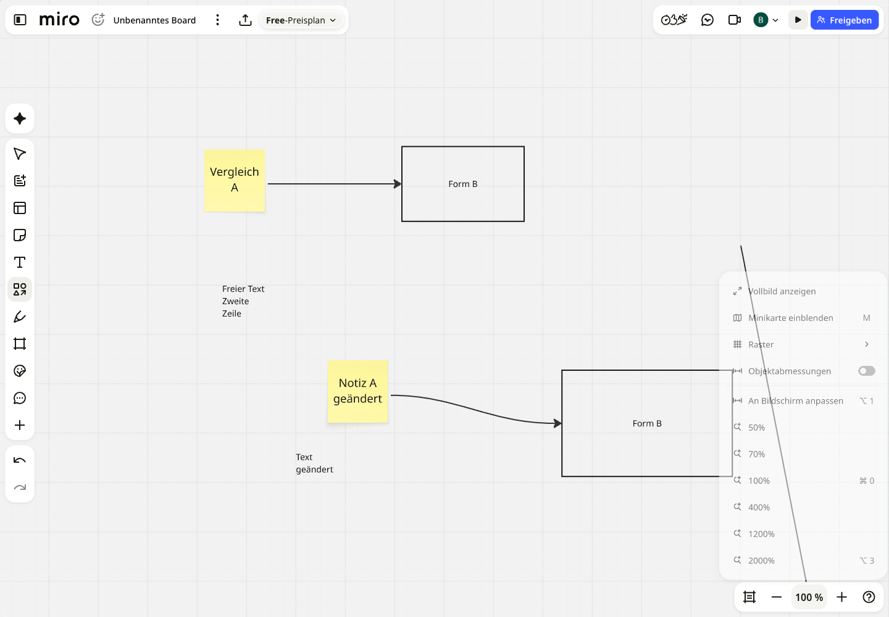
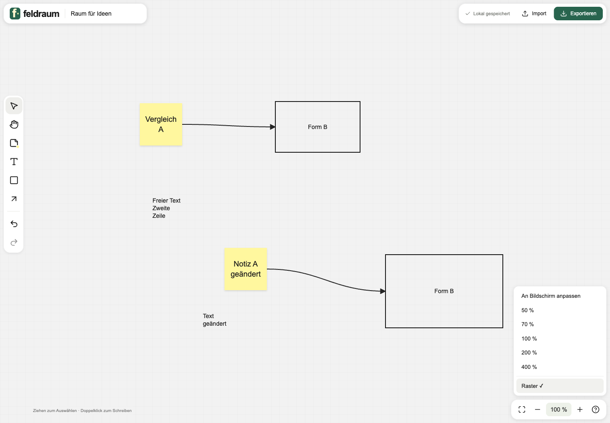
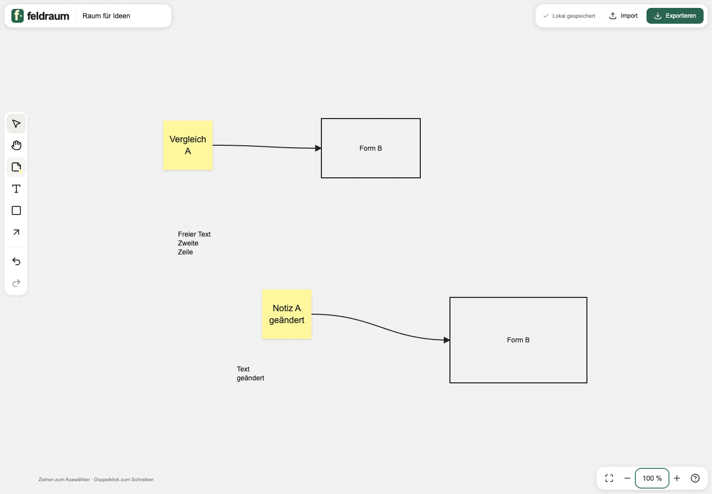